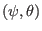

If the Jacobian
is chosen to be of the following form
then Eq. (179) implies that
is a magnetic surface
function, i.e., the magnetic field lines are straight on

plane. The poloidal angle in Eq. (191) is written
The Jacobian
given by Eq. (193) now
takes the form